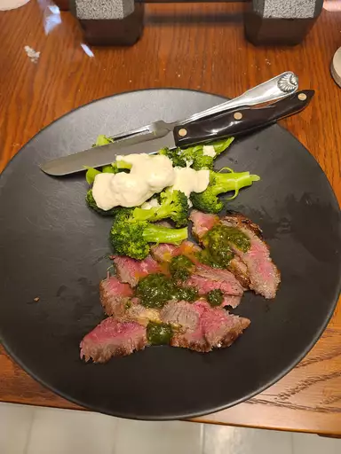

Steak Recipe

Preparation Steps
A great flank steak marinade like this one is important if you want a tender,
juicy, flavorful steak. Make sure you marinate your flank steak for at least 2 hours for best results or longer if you have time.
This wonderful quick and easy recipe also works great when the steak is sliced and used for fajitas.
Steak ingredient
- Meat
- Onion and Garlic
- Fries
- Salt
- Spices and Seasoning
Steps to Produce
- Marinate the steak for 2 hours or more.
- Cook the fries.
- Season the steak
- Cook the steak for 5 minute each side.
- Let the steak rest for 5 minute after cooking.
- Serve with the side of Veggies of your choice.